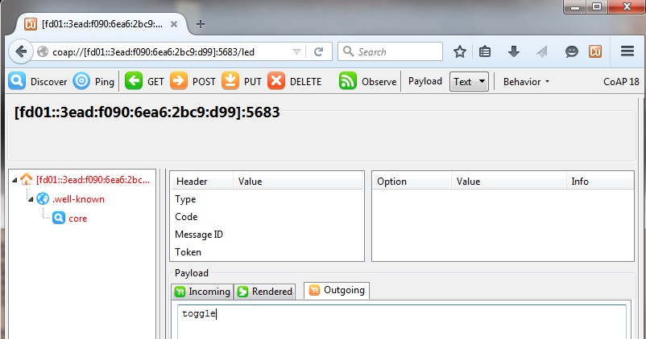
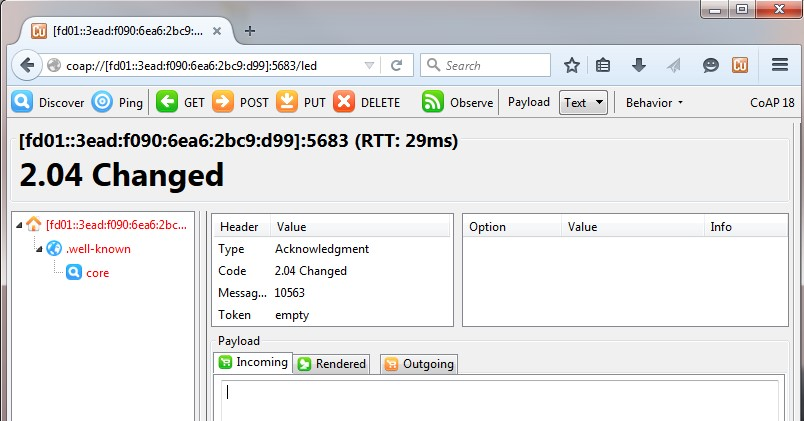
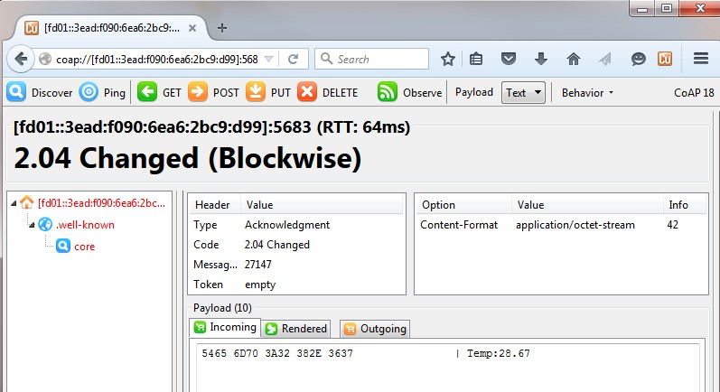

This continuation of the RNDIS Border Router scenario tests the CoAP implementation by
sending messages from the web browser to the Thread-only NodeB.
- In a Firefox browser, install the Copper extension: addons.mozilla.org/en-US/firefox/addon/copper-270430/
- After installing the extension, in the browser enter a CoAP URI and then press
enter.
- For example, for sending a LED CoAP command write:
- coap://[fd01::3ead:f090:6ea6:2bc9:d99]:5683/led
- Where fd01::3ead:f090:6ea6:2bc9:d99 is the IPv6 address of the border
router and it must be put between brackets and 5683 is the CoAP
default port.
- After the destination address and port, the URI-path of the
CoAP message is inserted.
- The payload of the message goes in the Outgoing tab:

Figure 1. Outgoing tab
- Finally, for sending the message, click POST.

Figure 2. Send message
- If the message was successfully sent, and an ACK was received, the status of the
received message and the round trip time are displayed.
- When sending a GET temp message, the incoming payload is shown in the
Incoming tab.

Figure 3. Incoming tab